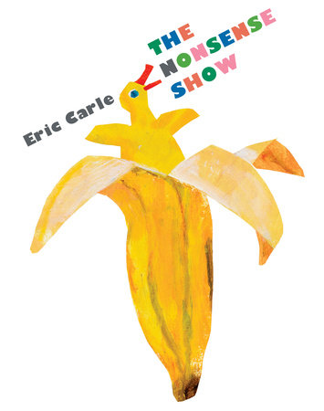

Ducks growing out of bananas?
A mouse catching a cat?
Yes, there's something strange, something funny and even downright preposterous on every page of this book
(and even the cover!).
But it's not a mistake - it's nonsense! And it's also surrealism.
Nonsense lies at the heart of many beloved nursery rhymes.
Children readily accept odd statements like "the cow jumped over the moon" and "the dish ran away with the spoon."
This fanciful bending of reality is also basic to surrealism.
In this book, nonsense and surrealism combine to spark creativity and imagination.
What's true?
What's impossible?
What's absolutely absurd?
From Eric Carle, creator of the classic,
The Very Hungry Caterpillar, comes a book to make children laugh and think, preparing them for a lifetime of loving both words and art